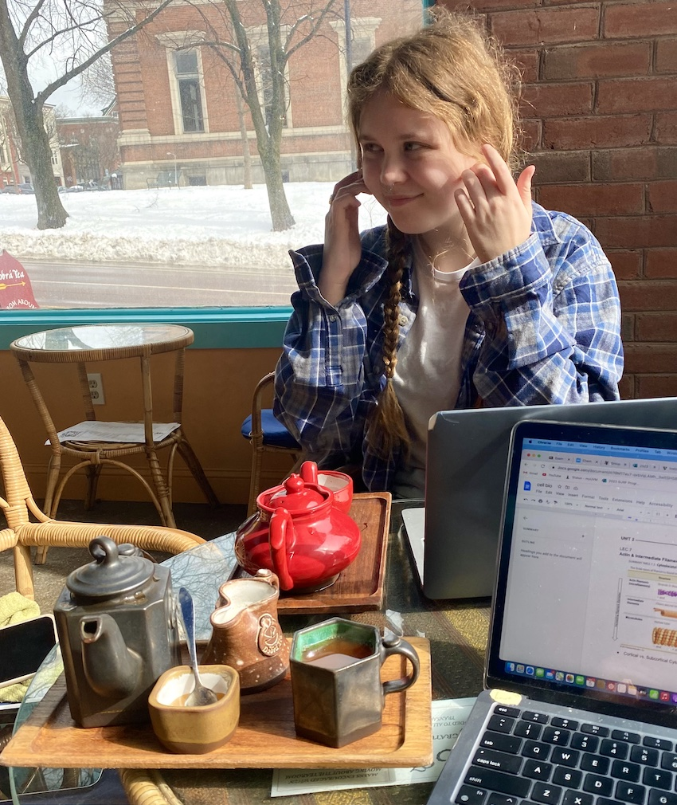
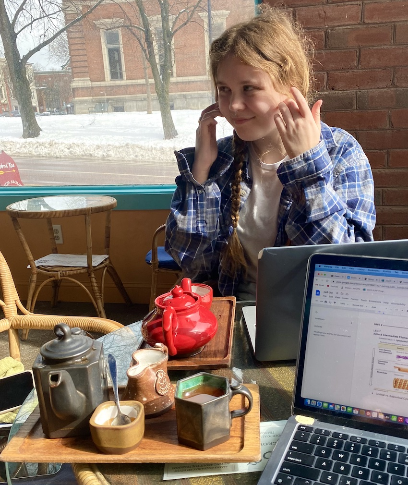
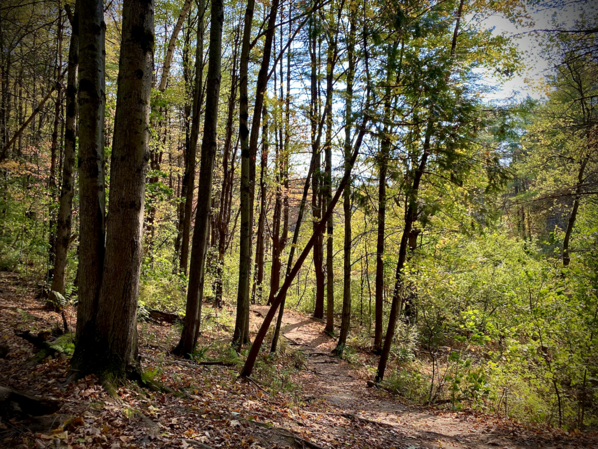
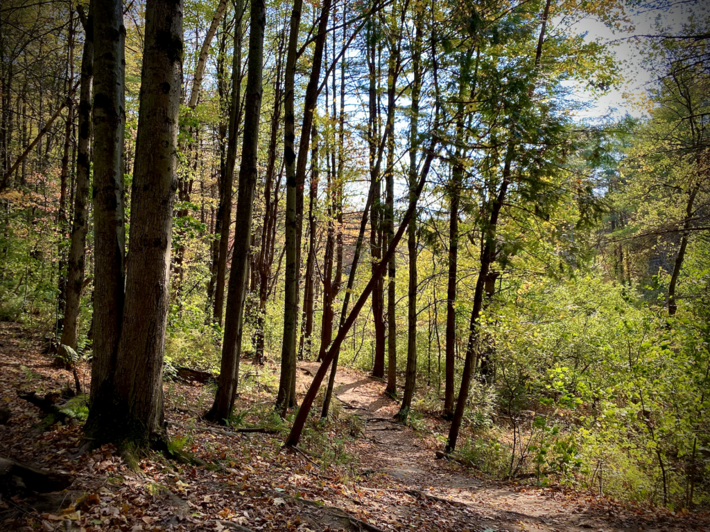

Nightlife: The Archives
This combination arcade and bar features vintage arcade games and an extensive cocktail list. Allie enjoys visiting the bar to play her favorite arcade game, Galaga!


This combination arcade and bar features vintage arcade games and an extensive cocktail list. Allie enjoys visiting the bar to play her favorite arcade game, Galaga!


Located in the heart of downtown Burlington, this spot specializes in serving locally sourced entrees and craft brews. Allie highly recommends their griddled cornbread and blue cheese garlic toast.
This new attraction is a must visit for cat lovers and students looking for a relaxing area to study. Allie loves to socialize with the adoptable cats and study in such a refreshing environment.


This public space is the place to be for a sunset or casual stroll by the water. Allie loves coming down to the park for the Independence Day fireworks and seasonal concerts.
Built in 2002 by Bren Alvarez, this tourist attraction is 38 drawers tall and over 40 feet high! Allie enjoys bringing her friends and family to see this comical creation.


This small shop is located on Church Street and sells artisan-crafted home decor, jewelry and other personal accessories. Allie loves how the shop promotes their handcrafted items with food samples and mystery gift bags!
Hanna’s hands down favorite bar in Burlington is RiRa's! It has been serving lunch and dinner every day since 1999. Around 10:00 pm on Fridays and Saturdays many of the tables are moved and a DJ stand will be set up at the top of the stairs. It is a go-to place for many UVM juniors and seniors and people in their 20s for dancing.
Located on the corner of North Winooski and Pearl, CNX Thai Cooking is a great spot for good priced food with large portions. There isn’t much seating inside so it is mostly a takeout place. Hanna’s favorite dish there is the Pad See Ew with tofu, she typically takes it to go and walks to the waterfront to enjoy the delicious food with a view!
A study spot staple for many students is Dobra Tea, with a wide variety of different teas and snacks to pick from. It is a quiet and peaceful place to do work, read a book or chat with some friends. Hanna loves to go there to treat herself to a nice warm cup of Kenyan black tea and a cookie dough brownie while getting some assignments done. The staff there are amazing and it is always good to support local business!
 

Owned by the Episical Church in Vermont but open to the public, Rock Point Commons is a wonderful slice of nature in the heart of Burlington. It offers beautiful views of Lake Champlain and the Adirondack Mountains along the cliff and a passage down to the shore. When on the shoreline, you can witness an awesome geologic formation that Hanna loves, that is the Champlain Valley thrust fault.
An underrated activity that most people visiting Burlington and UVM miss is taking the time to explore Centennial Woods. It is owned by UVM and offers great trails to run and walk on while being pretty secluded from the congestion of campus. Hanna finds the woods incredibly peaceful and a good spot for birding.
 

Along Church Street there is plenty of shopping for clothes and household items but if you're in need of a new book, Hanna suggests Phoenix books! It's a small business but has many new releases and great picks in every genre. They have a good selection of local works too!
Three Needs is my favorite bar to go to in Burlington, they have pool tables and lots of outdoor seating. Duff hour starts at 4pm every Monday-Saturday where they serve $1 beers until the keg runs out.
Folino's pizza is located near downtown Burlington. It has great artisan pizza that you can order at the counter or ahead online! It also has a nice patio outside for seating in the warmer months.
Muddy Waters is a sumper comfy coffee shop with a tree house feel.

Camels hump is a great hike with great views just 40 minutes from Burlington. It is a great place to hike, bike, and bird watch.
Sugarbush resort is just 45 minutes from Burlington where you can ski or snowboard in the winter. The resort has two mountains, Lincoln Peak and Mt. Ellen, with a total of 111 trails.